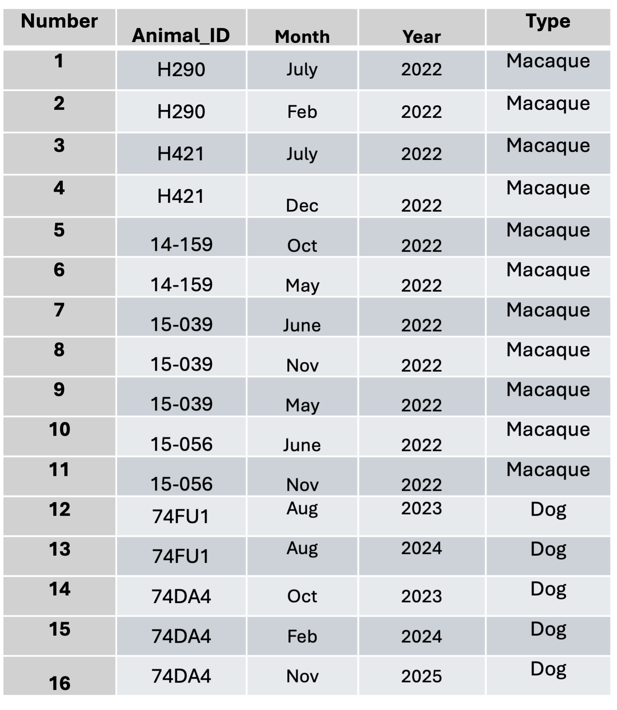

Warning: package 'knitr' was built under R version 4.4.3Comparison of Trypanosoma cruzi parasite composition across hosts and time points
Authors
* Aylla von Ermland\(^{1,2,*}\)
Department of Cellular Biology, University of Georgia, Athens, GA, USA.
Center for Tropical and Emerging Global Diseases, Athens, GA, USA.
Corresponding author: ayllae@uga.edu
1 Introduction
2 General Background Information
I study the protozoan parasite Trypanosoma cruzi that causes Chagas disease. This disease is of interest because understanding parasite infection dynamics is important for improving treatment regimens and understanding how the disease affects humans. Our previous data shows that when naturally infected dogs are once drug-treated, the disease can relapse months or years after, but it is still unkown if this occurs because of treatment failure (which is most of the times assumed) or if it is because of a reinfection, which in this case a new treatment would be required. The goal of this project is to investigate if reinfection occurs among natural infected hosts in a relative small window of time. I have just received this data and have not analyzed it, so the MADA individual project be a great opportunity.
The parasites analyzed in this study were isolated from blood of naturally infected hosts, including dogs and macaques, in two different locations in Texas, USA. Dogs were sampled from ranches, while macaques were housed in non-human primate research facilities with an indoor/outdoor configuration. We received samples from these locations in collaboration of Texas A&M University. Because both the T. cruzi parasite and its vector (kissing bugs) are endemic among wild animals in Texas, these animals are naturally exposed and become infected frequently. All animals included in this study were previously treated with the standard drug regimen for Chagas disease (Benznidazole). A few months (or years) after treatment, these animals had a relapse in parasitemia and became sick again, but it is unclear whether this is due to treatment failure or reinfection over time given continued exposure to the parasite and vector.
3 Description of data and data source
The data consist of a table containing frequencies of amplicon sequence clusters (or variants) from 16 samples of parasite DNA obtained through amplicon sequencing (nanopore). There are five parasite samples from dogs and eleven samples from macaques, collected across multiple time points over several months for each animal (see below):

Using blood DNA samples, I performed a PCR amplification of the Hyper Variable Region (HVR) of the genome (200–400 bp), which is located in an organelle called kinetoplast DNA (kDNA). This region consists of multiple copies within the genome. Sequenced HVR reads were classified into clusters using k-mer analysis through a custom Python pipeline. Each cluster represents a group or variant of this HVR. The resulting data are stored in the file cluster_relative_frequencies_per_sample.csv, which contains the relative frequencies of clusters for each sample.
The csv file below represents each sample information, where each row is a sample, columns are named animal_id; month; year; animal_spp; and the Cluster 1; Cluster 2; ….Each value represents the relative frequency of that sequence cluster in that particular sample.
library(readr)Warning: package 'readr' was built under R version 4.4.3library(dplyr)
Attaching package: 'dplyr'The following objects are masked from 'package:stats':
filter, lagThe following objects are masked from 'package:base':
intersect, setdiff, setequal, unionlibrary(here)here() starts at /Users/ayllaermland/Downloads/BIOS8060E/AyllaErmland-portfolio# Define the object by assigning the result to a variable
cluster_data <- read_csv(here("Individual-project", "cluster_relative_frequencies_per_sample2.csv"))Rows: 18 Columns: 42── Column specification ────────────────────────────────────────────────────────
Delimiter: ","
chr (3): animal_id, month, animal_spp
dbl (39): year, cluster 1, cluster 2, cluster 3, cluster 4, cluster 5, clust...
ℹ Use `spec()` to retrieve the full column specification for this data.
ℹ Specify the column types or set `show_col_types = FALSE` to quiet this message.# Inspect the data
glimpse(cluster_data)Rows: 18
Columns: 42
$ animal_id <chr> NA, "14159", "14159", "15039", "15039", "15039", "15056",…
$ month <chr> NA, "May", "Oct", "June", "May", "Nov", "June", "Nov", "F…
$ year <dbl> NA, 2022, 2022, 2022, 2022, 2022, 2022, 2022, 2024, 2025,…
$ animal_spp <chr> NA, "macaque", "macaque", "macaque", "macaque", "macaque"…
$ `cluster 1` <dbl> 1.00000000, 0.13548490, 0.08463779, 0.10771841, 0.1207078…
$ `cluster 2` <dbl> 10.000000000, 0.035788465, 0.037313433, 0.098388465, 0.05…
$ `cluster 3` <dbl> 11.000000000, 0.147946956, 0.290134692, 0.002544529, 0.00…
$ `cluster 4` <dbl> 12.000000000, 0.029397667, 0.033127048, 0.055979644, 0.04…
$ `cluster 5` <dbl> 13.000000000, 0.000319540, 0.001638151, 0.000000000, 0.00…
$ `cluster 6` <dbl> 14.000000000, 0.107365394, 0.215689843, 0.002261804, 0.00…
$ `cluster 7` <dbl> 15.000000000, 0.007988497, 0.000000000, 0.000848176, 0.00…
$ `cluster 8` <dbl> 16.000000000, 0.001278159, 0.000546050, 0.000000000, 0.00…
$ `cluster 9` <dbl> 17.000000000, 0.000639080, 0.000728067, 0.000282725, 0.00…
$ `cluster 10` <dbl> 18.000000000, 0.000000000, 0.000182017, 0.040712468, 0.22…
$ `cluster 11` <dbl> 19.000000000, 0.000798850, 0.000910084, 0.000000000, 0.00…
$ `cluster 12` <dbl> 2.000000000, 0.012621825, 0.014743356, 0.026293469, 0.047…
$ `cluster 13` <dbl> 20.000000000, 0.000159770, 0.000728067, 0.000000000, 0.00…
$ `cluster 14` <dbl> 21.000000000, 0.000000000, 0.000000000, 0.000000000, 0.00…
$ `cluster 15` <dbl> 22.000000000, 0.000000000, 0.000000000, 0.000000000, 0.00…
$ `cluster 16` <dbl> 23.000000000, 0.009745966, 0.010010921, 0.015549901, 0.00…
$ `cluster 17` <dbl> 24.000000000, 0.004952868, 0.000000000, 0.000000000, 0.00…
$ `cluster 18` <dbl> 25.000000000, 0.000639080, 0.000910084, 0.000000000, 0.00…
$ `cluster 19` <dbl> 26.000000000, 0.000159770, 0.000546050, 0.000000000, 0.00…
$ `cluster 20` <dbl> 27.000000000, 0.000000000, 0.000182017, 0.024879842, 0.14…
$ `cluster 21` <dbl> 28.000000000, 0.001437929, 0.000000000, 0.000848176, 0.00…
$ `cluster 22` <dbl> 29.000000000, 0.100814827, 0.023844194, 0.000282725, 0.00…
$ `cluster 23` <dbl> 3.00000000, 0.13037226, 0.07426283, 0.14645180, 0.0954286…
$ `cluster 24` <dbl> 30.000000000, 0.000958620, 0.000364033, 0.070681368, 0.00…
$ `cluster 25` <dbl> 31.000000000, 0.081482665, 0.015835457, 0.000000000, 0.00…
$ `cluster 26` <dbl> 32.000000000, 0.000319540, 0.000546050, 0.000000000, 0.00…
$ `cluster 27` <dbl> 33.000000000, 0.000159770, 0.000182017, 0.000000000, 0.00…
$ `cluster 28` <dbl> 34.000000000, 0.009745966, 0.018019658, 0.000000000, 0.00…
$ `cluster 29` <dbl> 35.000000000, 0.000000000, 0.000000000, 0.000000000, 0.00…
$ `cluster 30` <dbl> 36.000000000, 0.000000000, 0.000000000, 0.000000000, 0.00…
$ `cluster 31` <dbl> 37.000000000, 0.000000000, 0.000000000, 0.000000000, 0.00…
$ `cluster 32` <dbl> 38.000000000, 0.000000000, 0.000182017, 0.000000000, 0.00…
$ `cluster 33` <dbl> 4.00000000, 0.08691484, 0.05496906, 0.04721515, 0.0644617…
$ `cluster 34` <dbl> 5.000000000, 0.001917239, 0.002184201, 0.000282725, 0.000…
$ `cluster 35` <dbl> 6.000000000, 0.047771209, 0.056971241, 0.187164264, 0.097…
$ `cluster 36` <dbl> 7.000000000, 0.040262023, 0.055515107, 0.171048912, 0.090…
$ `cluster 37` <dbl> 8.000000000, 0.001278159, 0.003822352, 0.000000000, 0.000…
$ `cluster 38` <dbl> 9.000000000, 0.001278159, 0.001274117, 0.000565451, 0.000…head(cluster_data)# A tibble: 6 × 42
animal_id month year animal_spp `cluster 1` `cluster 2` `cluster 3`
<chr> <chr> <dbl> <chr> <dbl> <dbl> <dbl>
1 <NA> <NA> NA <NA> 1 10 11
2 14159 May 2022 macaque 0.135 0.0358 0.148
3 14159 Oct 2022 macaque 0.0846 0.0373 0.290
4 15039 June 2022 macaque 0.108 0.0984 0.00254
5 15039 May 2022 macaque 0.121 0.0590 0.00232
6 15039 Nov 2022 macaque 0.209 0.0641 0.0109
# ℹ 35 more variables: `cluster 4` <dbl>, `cluster 5` <dbl>, `cluster 6` <dbl>,
# `cluster 7` <dbl>, `cluster 8` <dbl>, `cluster 9` <dbl>,
# `cluster 10` <dbl>, `cluster 11` <dbl>, `cluster 12` <dbl>,
# `cluster 13` <dbl>, `cluster 14` <dbl>, `cluster 15` <dbl>,
# `cluster 16` <dbl>, `cluster 17` <dbl>, `cluster 18` <dbl>,
# `cluster 19` <dbl>, `cluster 20` <dbl>, `cluster 21` <dbl>,
# `cluster 22` <dbl>, `cluster 23` <dbl>, `cluster 24` <dbl>, …summary(cluster_data) animal_id month year animal_spp
Length:18 Length:18 Min. :2022 Length:18
Class :character Class :character 1st Qu.:2022 Class :character
Mode :character Mode :character Median :2022 Mode :character
Mean :2023
3rd Qu.:2023
Max. :2025
NA's :2
cluster 1 cluster 2 cluster 3 cluster 4
Min. :0.01861 Min. : 0.003515 Min. : 0.000000 Min. : 0.003775
1st Qu.:0.05777 1st Qu.: 0.006797 1st Qu.: 0.000572 1st Qu.: 0.022444
Median :0.13548 Median : 0.032615 Median : 0.002317 Median : 0.030368
Mean :0.17213 Mean : 0.620701 Mean : 0.674816 Mean : 0.734027
3rd Qu.:0.16402 3rd Qu.: 0.060439 3rd Qu.: 0.004583 3rd Qu.: 0.041373
Max. :1.00000 Max. :10.000000 Max. :11.000000 Max. :12.000000
NA's :1 NA's :1 NA's :1 NA's :1
cluster 5 cluster 6 cluster 7
Min. : 0.000000 Min. : 0.000000 Min. : 0.000000
1st Qu.: 0.000320 1st Qu.: 0.000196 1st Qu.: 0.000211
Median : 0.003051 Median : 0.001290 Median : 0.002761
Mean : 0.787982 Mean : 0.843473 Mean : 0.898652
3rd Qu.: 0.057548 3rd Qu.: 0.002317 3rd Qu.: 0.007988
Max. :13.000000 Max. :14.000000 Max. :15.000000
NA's :1 NA's :1 NA's :1
cluster 8 cluster 9 cluster 10
Min. : 0.000000 Min. : 0.000000 Min. : 0.000000
1st Qu.: 0.000546 1st Qu.: 0.000283 1st Qu.: 0.000000
Median : 0.009303 Median : 0.003622 Median : 0.000182
Mean : 0.958204 Mean : 1.017494 Mean : 1.077885
3rd Qu.: 0.036254 3rd Qu.: 0.043678 3rd Qu.: 0.000425
Max. :16.000000 Max. :17.000000 Max. :18.000000
NA's :1 NA's :1 NA's :1
cluster 11 cluster 12 cluster 13 cluster 14
Min. : 0.000000 Min. :0.00674 Min. : 0.000000 Min. : 0.000000
1st Qu.: 0.000799 1st Qu.:0.01262 1st Qu.: 0.000587 1st Qu.: 0.000000
Median : 0.005789 Median :0.02629 Median : 0.002860 Median : 0.000000
Mean : 1.131724 Mean :0.23042 Mean : 1.190034 Mean : 1.251486
3rd Qu.: 0.029114 3rd Qu.:0.18479 3rd Qu.: 0.031843 3rd Qu.: 0.001176
Max. :19.000000 Max. :2.00000 Max. :20.000000 Max. :21.000000
NA's :1 NA's :1 NA's :1 NA's :1
cluster 15 cluster 16 cluster 17
Min. : 0.000000 Min. : 0.000827 Min. : 0.000000
1st Qu.: 0.000000 1st Qu.: 0.004036 1st Qu.: 0.000000
Median : 0.000179 Median : 0.010011 Median : 0.000425
Mean : 1.309116 Mean : 1.364255 Mean : 1.421105
3rd Qu.: 0.000632 3rd Qu.: 0.019875 3rd Qu.: 0.004953
Max. :22.000000 Max. :23.000000 Max. :24.000000
NA's :1 NA's :1 NA's :1
cluster 18 cluster 19 cluster 20 cluster 21
Min. : 0.000000 Min. : 0.000000 Min. :0.00e+00 Min. : 0.000000
1st Qu.: 0.000639 1st Qu.: 0.000211 1st Qu.:0.00e+00 1st Qu.: 0.001438
Median : 0.010337 Median : 0.002097 Median :0.00e+00 Median : 0.005179
Mean : 1.481129 Mean : 1.539841 Mean :1.60e+00 Mean : 1.654248
3rd Qu.: 0.014559 3rd Qu.: 0.026089 3rd Qu.:4.25e-04 3rd Qu.: 0.006661
Max. :25.000000 Max. :26.000000 Max. :2.70e+01 Max. :28.000000
NA's :1 NA's :1 NA's :1 NA's :1
cluster 22 cluster 23 cluster 24 cluster 25
Min. : 0.000000 Min. :0.02522 Min. : 0.000000 Min. : 0.000000
1st Qu.: 0.000000 1st Qu.:0.05714 1st Qu.: 0.000000 1st Qu.: 0.000000
Median : 0.000000 Median :0.10853 Median : 0.000196 Median : 0.000000
Mean : 1.713274 Mean :0.27664 Mean : 1.774044 Mean : 1.829294
3rd Qu.: 0.000283 3rd Qu.:0.14645 3rd Qu.: 0.000421 3rd Qu.: 0.000223
Max. :29.000000 Max. :3.00000 Max. :30.000000 Max. :31.000000
NA's :1 NA's :1 NA's :1 NA's :1
cluster 26 cluster 27 cluster 28 cluster 29
Min. : 0.00000 Min. : 0.00000 Min. : 0.00000 Min. : 0.00000
1st Qu.: 0.00032 1st Qu.: 0.00018 1st Qu.: 0.00000 1st Qu.: 0.00000
Median : 0.00434 Median : 0.00165 Median : 0.00000 Median : 0.00000
Mean : 1.88837 Mean : 1.94300 Mean : 2.00167 Mean : 2.05986
3rd Qu.: 0.01335 3rd Qu.: 0.00345 3rd Qu.: 0.00025 3rd Qu.: 0.00216
Max. :32.00000 Max. :33.00000 Max. :34.00000 Max. :35.00000
NA's :1 NA's :1 NA's :1 NA's :1
cluster 30 cluster 31 cluster 32 cluster 33
Min. : 0.00000 Min. : 0.00000 Min. : 0.00000 Min. :0.01964
1st Qu.: 0.00000 1st Qu.: 0.00000 1st Qu.: 0.00000 1st Qu.:0.05497
Median : 0.00058 Median : 0.00000 Median : 0.00018 Median :0.06446
Mean : 2.11825 Mean : 2.17706 Mean : 2.23572 Mean :0.29411
3rd Qu.: 0.00126 3rd Qu.: 0.00121 3rd Qu.: 0.00055 3rd Qu.:0.07926
Max. :36.00000 Max. :37.00000 Max. :38.00000 Max. :4.00000
NA's :1 NA's :1 NA's :1 NA's :1
cluster 34 cluster 35 cluster 36 cluster 37
Min. :0.000000 Min. :0.005375 Min. :0.003453 Min. :0.000000
1st Qu.:0.001917 1st Qu.:0.009558 1st Qu.:0.006797 1st Qu.:0.001278
Median :0.041051 Median :0.047771 Median :0.040262 Median :0.035680
Mean :0.334348 Mean :0.402256 Mean :0.456781 Mean :0.504833
3rd Qu.:0.075828 3rd Qu.:0.091702 3rd Qu.:0.085971 3rd Qu.:0.064013
Max. :5.000000 Max. :6.000000 Max. :7.000000 Max. :8.000000
NA's :1 NA's :1 NA's :1 NA's :1
cluster 38
Min. :0.000000
1st Qu.:0.001274
Median :0.006482
Mean :0.561185
3rd Qu.:0.073087
Max. :9.000000
NA's :1 4 Hypotheses to be addressed
The main hypothesis addressed in this project is whether natural parasite reinfection occurs in the same host over time. In order to answer this question, I will compare the HVR cluster profile of parasites collected from host blood at different time points to determine whether parasite composition remains the same or differs across samples. If the cluster frequency profiles are the same/correlated, this suggests the parasite came from the same initial infection and if they present differences, may indicate reinfection.
Additional questions can be explored using this dataset such as whether parasite composition differs between hosts, such as dogs versus macaques, suggesting host-related differences in parasite composition. Another question is whether samples collected in the same month are more closely related to each other, because of the kissing bug season. Overall, the correlation and relatedness among samples are examined to assess patterns associated with host type, time point, and sampling period.
I expect to observe reinfection in at least 10% of the samples, based on treatment data showing that approximately 10% of treated animals experience a later relapse of the disease.
5 Methods: Data analysis approach
Initial exploratory analyses include plotting frequency bar plots for cluster composition across samples and to acess overall patterns. A correlation matrix will then be generated based on shared clusters between samples. This will allow testing whether samples from the same host at different time points are more closely related to each other than to samples from other hosts. Higher correlation with samples from other animals may indicate reinfection.
Additional analyses include evaluating whether host type (dogs or macaques) is a predictive variable for parasite composition and testing whether samples collected during the same month are correlated across hosts. These analyses will help assess temporal, host-related, and potential geographic patterns in parasite composition.